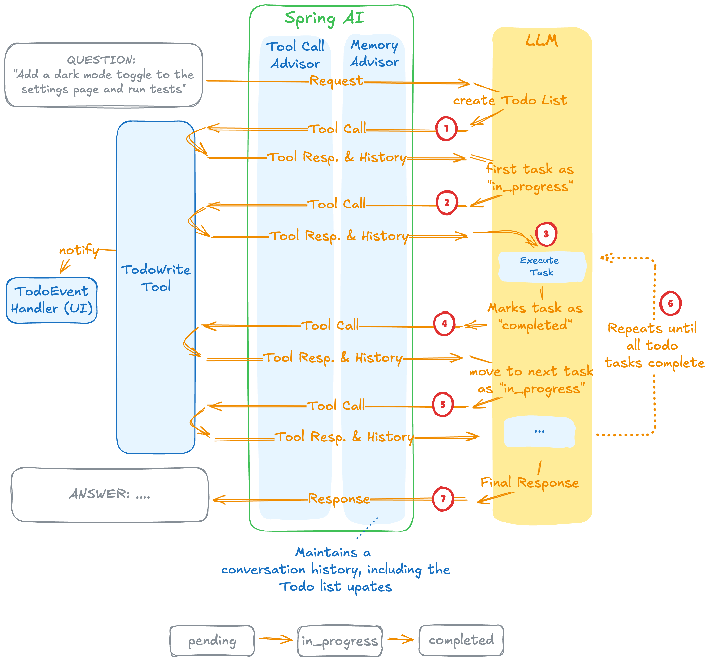

TodoWriteTool¶
A structured task list management tool for AI agents. Helps track progress, organize complex tasks, and provide visibility into task execution.

Reference: Claude Code Todo Tracking
Quick Start¶
ChatClient chatClient = chatClientBuilder
.defaultTools(TodoWriteTool.builder().build())
.defaultAdvisors(
ToolCallAdvisor.builder().conversationHistoryEnabled(false).build(),
MessageChatMemoryAdvisor.builder(MessageWindowChatMemory.builder().build()).build())
.build();
Note: Requires Chat Memory and ToolCallAdvisor. For best results, use a system prompt like MAIN_AGENT_SYSTEM_PROMPT_V2.
Task Structure¶
Each task has three fields:
| Field | Description | Example |
|---|---|---|
content |
What needs to be done (imperative) | "Run tests" |
activeForm |
What is happening (continuous) | "Running tests" |
status |
Current state | pending, in_progress, completed |
Critical Rule: Exactly ONE task can be in_progress at any time.
When to Use¶
Use when: - Task requires 3+ distinct steps - Multiple files or operations involved - User provides a list of tasks
Skip when: - Single straightforward task - Less than 3 trivial steps - Purely informational query
Example Output¶
Progress: 2/4 tasks completed (50%)
[✓] Find top 10 Tom Hanks movies
[✓] Group movies in pairs
[→] Print inverted titles
[ ] Final summary
Custom Event Handler¶
TodoWriteTool.builder()
.todoEventHandler(event -> {
// Handle todo updates (e.g., publish events, update UI)
applicationEventPublisher.publishEvent(new TodoUpdateEvent(this, event.todos()));
})
.build();
Best Practices¶
- One in progress - Always exactly one task
in_progress - Update immediately - Mark completed right after finishing
- Complete fully - Only mark completed when 100% done
- Handle blockers - Add new tasks for discovered issues